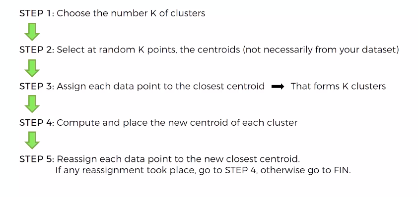
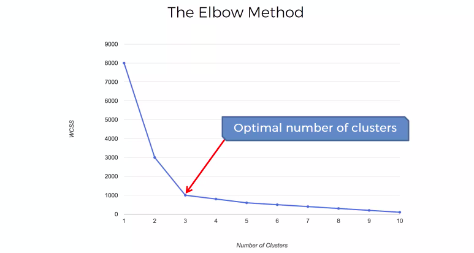
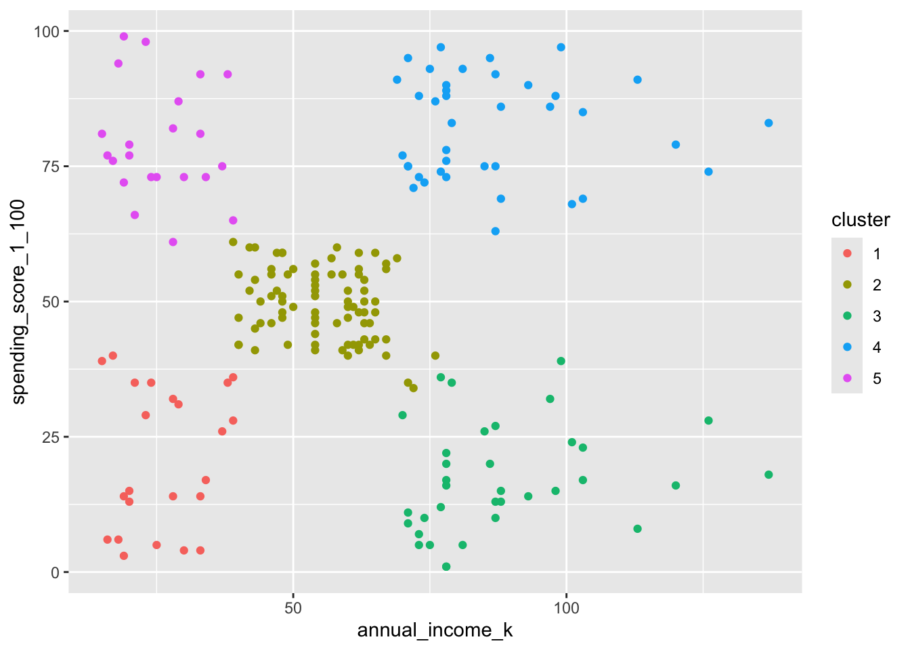

Code
library(tidyverse)
library(broom)
library(janitor)with Mall Customers Datase
Tony Duan

https://www.kaggle.com/datasets/shwetabh123/mall-customer
[1] "CustomerID" "Genre" "Age"
[4] "Annual.Income..k.." "Spending.Score..1.100."The standard k-means algorithm isn’t directly applicable to categorical data, for various reasons. The sample space for categorical data is discrete, and doesn’t have a natural origin. A Euclidean distance function on such a space isn’t really meaningful. As someone put it, “The fact a snake possesses neither wheels nor legs allows us to say nothing about the relative value of wheels and legs.”
There’s a variation of k-means known as k-modes,if we need to include categorical data
So only get Annual Income (k$) and Spending Score (1-100).
# A tibble: 9 × 5
k kclust tidied glanced augmented
<int> <list> <list> <list> <list>
1 1 <kmeans> <tibble [1 × 5]> <tibble [1 × 4]> <tibble [200 × 3]>
2 2 <kmeans> <tibble [2 × 5]> <tibble [1 × 4]> <tibble [200 × 3]>
3 3 <kmeans> <tibble [3 × 5]> <tibble [1 × 4]> <tibble [200 × 3]>
4 4 <kmeans> <tibble [4 × 5]> <tibble [1 × 4]> <tibble [200 × 3]>
5 5 <kmeans> <tibble [5 × 5]> <tibble [1 × 4]> <tibble [200 × 3]>
6 6 <kmeans> <tibble [6 × 5]> <tibble [1 × 4]> <tibble [200 × 3]>
7 7 <kmeans> <tibble [7 × 5]> <tibble [1 × 4]> <tibble [200 × 3]>
8 8 <kmeans> <tibble [8 × 5]> <tibble [1 × 4]> <tibble [200 × 3]>
9 9 <kmeans> <tibble [9 × 5]> <tibble [1 × 4]> <tibble [200 × 3]>
customer_id genre age annual_income_k spending_score_1_100 annual_income_k_2
1 1 Male 19 15 39 15
2 2 Male 21 15 81 15
3 3 Female 20 16 6 16
4 4 Female 23 16 77 16
5 5 Female 31 17 40 17
6 6 Female 22 17 76 17
spending_score_1_100_2 cluster
1 39 1
2 81 5
3 6 1
4 77 5
5 40 1
6 76 5
https://www.kaggle.com/code/sangwookchn/clustering-techniques-using-scikit-learn
---
title: "K mean Clustering"
subtitle: "with Mall Customers Datase"
author: "Tony Duan"
execute:
warning: false
error: false
format:
html:
toc: true
toc-location: right
code-fold: show
code-tools: true
number-sections: true
code-block-bg: true
code-block-border-left: "#31BAE9"
---
{width="500"}
# load package
```{r}
library(tidyverse)
library(broom)
library(janitor)
```
# data
## download data
https://www.kaggle.com/datasets/shwetabh123/mall-customer
## input data
```{r}
df_train=read.csv('./data/Mall_Customers.csv')
```
```{r}
names(df_train)
```
```{r}
df_train=df_train %>% clean_names()
```
```{r}
names(df_train)
```
## data EDA
# model with Annual Income (k$) and Spending Score (1-100)
The standard k-means algorithm isn't directly applicable to categorical data, for various reasons. The sample space for categorical data is discrete, and doesn't have a natural origin. A Euclidean distance function on such a space isn't really meaningful. As someone put it, "The fact a snake possesses neither wheels nor legs allows us to say nothing about the relative value of wheels and legs."
There's a variation of k-means known as k-modes,if we need to include categorical data
So only get Annual Income (k$) and Spending Score (1-100).
```{r}
df_train2=df_train %>% select(annual_income_k,spending_score_1_100)
```
# Optimal number of k-clusters
```{r}
kclusts <-
tibble(k = 1:9) %>%
mutate(
kclust = map(k, ~kmeans(df_train2, .x)),
tidied = map(kclust, tidy),
glanced = map(kclust, glance),
augmented = map(kclust, augment, df_train2)
)
kclusts
```
```{r}
clusters <-
kclusts %>%
unnest(cols = c(tidied))
assignments <-
kclusts %>%
unnest(cols = c(augmented))
clusterings <-
kclusts %>%
unnest(cols = c(glanced))
```
```{r}
ggplot(clusterings, aes(k, tot.withinss)) +
geom_line() +
geom_point()
```
{width="500"}
# 5 groups
```{r}
kclust <- kmeans(df_train2, centers = 5)
```
```{r}
result=augment(kclust, df_train2)
```
# profiling
```{r}
df_train3=cbind(df_train,result)%>% clean_names()
```
```{r}
head(df_train3)
```
```{r}
p=ggplot(df_train3, aes(annual_income_k, spending_score_1_100,color=cluster)) + geom_point()
p
```
## 'annual_income_k'
```{r}
p=ggplot(df_train3, aes(cluster,annual_income_k,fill=cluster)) + geom_boxplot()
p
```
## 'spending_score_1_100'
```{r}
p=ggplot(df_train3, aes(cluster,spending_score_1_100,fill=cluster)) + geom_boxplot()
p
```
## Age
# reference:
https://www.kaggle.com/code/sangwookchn/clustering-techniques-using-scikit-learn